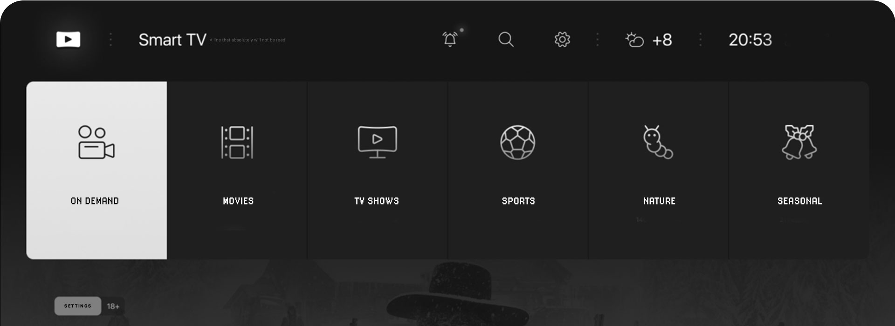

Use TV And A Great Dental Office Commercial To Your Success
Get ready for your close-up and see how you can boost your practice with incredible dental TV ads!
Since its invention, television has become an increasingly popular and powerful staple of the American household. The average person spends 3 hours and 35 minutes a day watching television, and a lot of that time is spent seeing commercials and ads. In the past, most dentists haven’t used this incredibly helpful and ubiquitous marketing tool when trying to grow their practices. They worry about the potential higher costs compared to other marketing methods like radio or the transition from local TV to more individualized On-Demand and streaming content.
This is where we come in. At Dental Game Plan, our experts help you get ahead of your competitors through the best dental commercials. We’ve been in the dental marketing field for 14 years, and we understand how to use TV campaigns to best help your expanding dental practice. Not only do we keep things as low-cost as possible, but we take advantage of the innovations currently changing the TV landscape that other offices don’t understand. We’re also entirely transparent in our marketing, so you know what you’re spending where. You can see your budget turn into new patients and revenue in real-time!
With our help, we can keep both commercial marketing and production completely in-house, so the entire television marketing process can be totally smooth sailing. Among our staff is a winning team of writers, videographers, and editors who can create personalized, high-quality dental TV ads that show off your practice’s best side. Once everything is together and your ad is on the air, you’ll start seeing the incoming calls ramping up your new patient numbers like never before. Can’t wait to see your practice hit the small screen? Get the best team for the job and give our team a call today at (323) 844-0339!